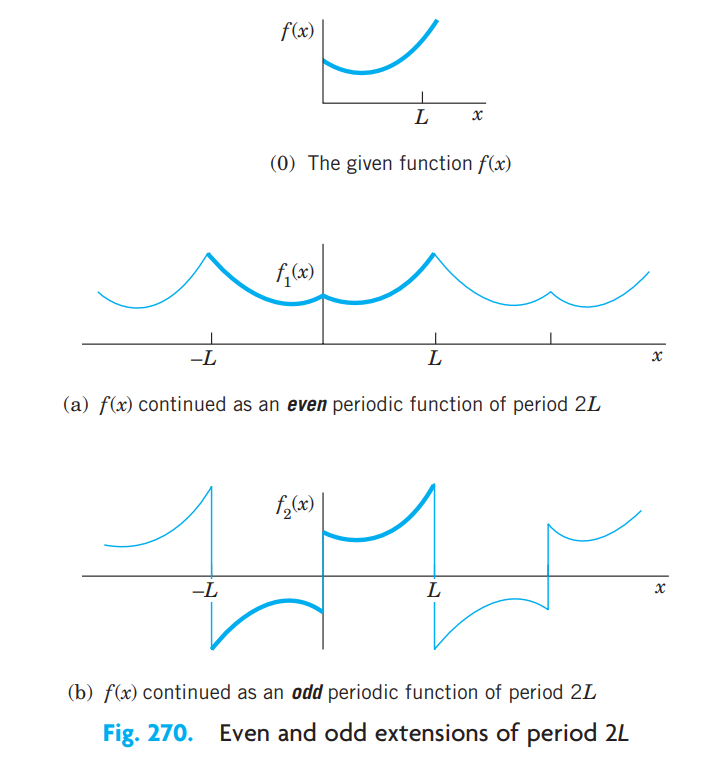
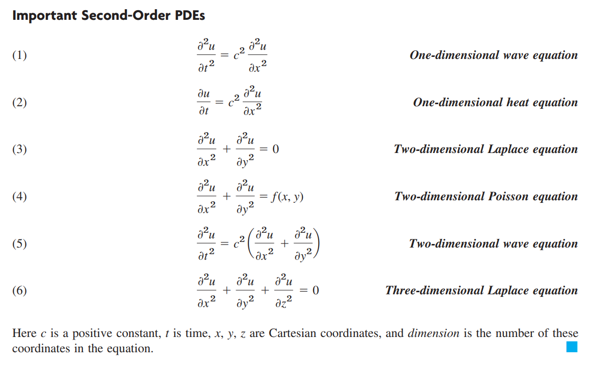

If f(x) is an even function, that is, f(−x)=f(x), then bn=0, reducing its Fourier series to a Fourier cosine series with
a0an=L1∫0Lf(x)dx=L2∫0Lf(x)cos(Lnπx)dx
If f(x) is an odd function, that is, f(−x)=−f(x), then an=0, reducing its Fourier serier to a Fourier sine series with
bn=L2∫0Lf(x)sin(Lnπx)dx
The Complex Fourier Series
f(x)=n=−∞∑∞cneLinπx
where
cn=2L1∫−LLf(x)e−Linπxdx
For even functions f, the complex Fourier coefficients are real. For odd functions f, the complex Fourier coefficients are purely imaginary.
Euler's formula
The above is derived from the Euler's formula:
eix=cos(x)+isin(x)
Half-Range Expansions

Approximation by Trigonometric Polynomials
The Nth partial sum of the Fourier series is an approximation of the given f(x). The square error of the Nth partial sum is minimal only if the coefficients are the Fourier coefficients of f.
f(x)≈a0+n=1∑N(ancos(Lnπx)+bnsin(Lnπx))
Parseval’s Identity
2a02+n=1∑∞(an2+b22)=π1∫−ππf(x)2dx
The error of the Nth partial sum is equal to the difference of the left and right parts of Parseval's identity.
A PDE is an equation that contains one or more partial derivatives of an unknown function that depends on at least two variables.
ODE and PDE terminology
Term
Definition
Order
The order of the highest derivative
Degree
The highest degree of the unknown function
Linear
Of first order, otherwise nonlinear
Homogeneous
If u=0 is a valid solution, else nonhomogeneous
Boundary conditions
Conditions of the space boundary, e.g. u(0,t)
Initial conditions
Conditions of the time boundary, e.g. u(x,0)
Dimensions
The number of space variables (x, y, z, etc.)
Basic Concepts of PDEs

Solution by Separating Variables. Use of Fourier Series
// TODO: Combine separation of variables explanation from wave and heat equations
d'Alembert
A quick solution of the wave equation with initial conditions u(x,0)=f(x) and ut(x,0)=g(x).
u(x,t)=21[f(x+ct)+f(x−ct)]+2c1∫x−ctx+ctg(s)ds
Heat Equation: Modeling Very Long Bars. Solution by Fourier Integrals and Transforms
// TODO: Use of Fourier Transforms
Rounding errors in numerical differentiation (4N)
Partial derivatives (4D)
Chain rule
For a scalar function h(x)=f(g(x))
∂x∂h=∂x∂f(g(x))⋅∂x∂g(x)
For a vector function g(t)=f(x(t))
∂t∂g=∇f(x(t))⋅∂t∂x
where ⋅ is the dot product.
Gradient
The gradient of f=f(x1,x2,…,xn) is given by
∇f=(∂x1∂f,∂x2∂f,…,∂xn∂f)
Directional derivative
The directional derivate of f, in the direction u, is given by
Duf(a)=∇f(a)⋅u
Jacobi matrix (Jacobian)
The Jacobian of f=(f1(x1,…,xn),…,fn(x1,…,xn)) is a matrix where each element is given by
Jij(x)=∂xj∂fi
For example, if f=(f(x,y),g(x,y))
J(x)=[∂x∂f∂x∂g∂y∂f∂y∂g]
Hess matrix (Hessian)
The Hessian of f, Hf is the Jacobian of the gradient of f.
Partial Derivatives and Taylor Series
f(a+h)=f(a)+∇f(a)⋅h+hT⋅Hf(a)⋅h+…
Preliminaries
Terminology
Term
Definition
Cm[a,b]
The set of all functions with continuous first m derivatives on the interval [a,b].
// TODO: Norms ?
Order of convergence
The order of convergence is p if there exists a positive constant M such that
ek+1≤Mekp
where ek is the error of the k-th iteration.
The order can be numerically verified with the following approximation
p≈log(ek+1/ek)log(ek+2/ek+1)
h-dependent approximations
e(h)=∣∣X−X(h)∣∣. The order of the approximation is p if there exists a positive constant M such
that
e(h)≤Mhp
alternatively, with Big O-notation
e(h)=O(hp)
The order of h-dependent approximations can be numerically verified with the following approximation
p≈log(hk+1/hk)log(e(hk+1)/e(hk))
Newton's method
Newton's method applied to the equation f(x)=0 is given by
xk+1=xk−f′(xk)f(xk)
// TODO: Trapeziodal rule?
Taylor Expansions
Given a function f∈C∞[a,b], choose a point x and an increment h such that x,x+h∈[a,b]. The Taylor polynomial of degree m of f around x is then given by
f(x+h)=k=0∑mk!hkf(k)(x)+Rm+1(x)
where
Rm+1(x)=(m+1)!hm+1f(m+1)(ξ)=O(hm+1)
Intermediate Value Theorem
Let f∈C[a,b] and let x be some number between f(a) and f(b), then
there exist at least one ξ∈(a,b) such that f(ξ)=x.
Mean Value Theorem
Let f∈C1[a,b]. Then there exists at least one ξ∈(a,b) such that
f′(ξ)=b−af(b)−f(a)
Mean Value Theorem for Integrals
Let f∈C[a,b] and g an integrable function that does not change sign on [a,b]. Then there exists at least one ξ∈(a,b) such that